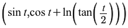
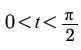
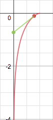
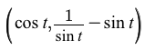
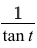
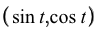
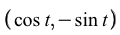
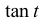
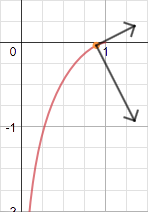

The tractrix is parametrized by:
where
The tractrix has a very special property: any tangent line drawn from a point on the tractrix to the y-axis will have magnitude 1.
The tangent vector is:
The tractrix is regular over the interval , which can be seen by the fact that the norm of the tangent vector is never zero within that interval.
The norm of the tangent vector is:
The unit tangent vector is therefore:
The normal vector is:
Since the norm of the normal vector is 1, the unit normal vector is also .
The curvature of the tractrix is given by:
As can be seen from the image, the arc length of the tractrix is infinite within the interval .
It is impossible to find an arc-length parametrization for the tractrix.
Visualization of vectors on the tractrix:
